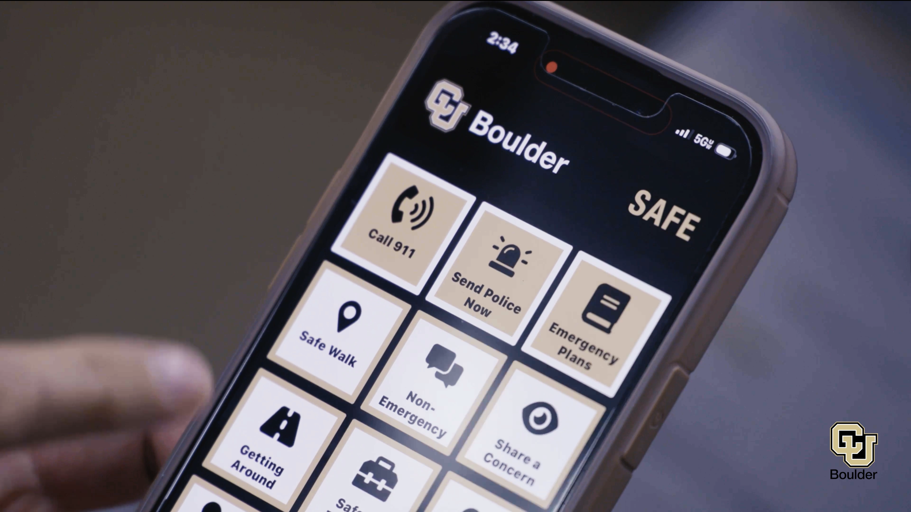

ux work
Subtitle or short description goes here
In Progress:
Redesigning the Cheyenne Mountain Zoo Website
I am working on using the UX design process to recognize problems and help redesign the CM Zoo’s website experience. So far, I’ve completed current experience usability tests and affinity mapping. Currently, I am ideating on the proposed task flow. Overall, I am focusing on the ticket purchasing and getting zoo information process.


Project Two
I currently work as an Undergraduate UI/UX Designer for the User Experience Team at the CU Boulder Office of Information Technology. In this role, I collaborate with industry professionals and CU campus offices to develop user-friendly and accessible digital interfaces for all users. Using tools like Figma, I design and refine new digital interfaces and improve existing campus products. I follow WCAG standards for accessibility, and test my tools using color contrast, screenreader, and HTML Validators.
I most frequently design for Buff Portal, which is the CU Student Portal for managing registration, finances, and additional campus information. I also ideate for individual campus offices to improve current experiences.
